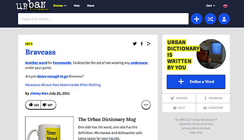

Website Comparison
A Successful Website
The urban dictionary site, urbandictionary.com is an example of a successful website. The website’s purpose is quite simple: to define coined modern day words or slang people may not be familiar with. All the words already archived have been added by different people with an account. Although the site is basically a parody of dictionary.com, the purpose for the site is pretty straight forward. Made for simple uses, the interface is quite plain yet effective as well. In terms of usability, the graphic icons located at the top make it easy for the user to understand quickly how to navigate through the site. For example, easily recognizable images such as the plus sign, shuffle sign, and profile/person sign located on the top right can be immediately understood as icons to perform tasks such as adding a new word or term, shuffling through the words for a random one each time, and logging in to the user’s account, respectively. The bar at the top allows users to browse through the dictionary alphabetically, as well as offer options for users to vote (thumbs up or down) for the credibility of some words, as well as provide access to the store. On the right side, there is an icon of a mouth, indicating that the user can switch the main language of the site.The site’s social media can also easily be found on the home page, and if directed to another page, can be easily found at the top, using simple icons of each respective social media platform. Overall, the site is successful because it serves its purpose with an easy to use direction.
A Less Sucessful Website
Will Smith’s personal site, willsmith.com, is a less successful website. Upon arriving at his page, and perhaps after a few seconds of confusion and realization that it is not a clickable “enter” image, the user will look around the website to find its purpose and determine its usability. The only performable tasks on the website are the two buttons located on the bottom left, a recognizable icon for Facebook and Youtube. When clicked, the user is redirected to Will Smith’s Facebook or a playlist on Youtube of all the videos and media Will Smith has been featured in, respectively. Its simplicity can actually be appreciated, and the site does serve its purpose - to redirect anyone interested in Will Smith or his work to other sites that better display information. Since Will Smith is a household name, the fact that this is actually his official homepage seems a bit clever and unique. However, to any other typical person who has a site to showcase their work and projects, it can be deemed less successful because it doesn’t utilize any of the space. For example, if as an artist I sent this website to represent my portfolio, it’s likely that having one, un-clickable picture of myself will leave any remarkable impressions to the viewer.